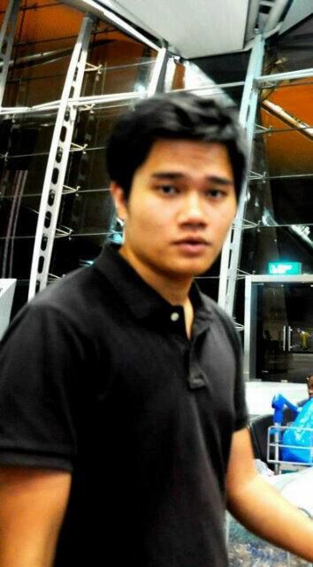

Ahmad Mustaqim bin Harith

Summary
Technical Support Engineer Professionals with outstanding expertise in the field, backed by a solid track record of over 4+ years in the industry. Effective communicator and team player, adept at collaborating across departments to enhance operational efficiency. Seeking an opportunity to
secure a position in a reputable company to expand professional career network. A dependable, confident, and personable professional committed to fostering positive relationships and delivering exceptional outcomes and to solve business needs.
Education
Management and Science University
- Diploma in Computer Engineering
The Cambridge International School, Qatar
- IGCSE 2011
- IELTS: 6.5 Band
Work Experiences
CTC Global Sdn. Bhd.
Operations Team Lead | 2025 - 2026
- Supervised a team of 12 engineers.
- Handled general service requests from clients.
- Assisted and supported VIP and VVIP users with high-level service.
- Managed all security compliance software reports from the client and performed remediation when needed.
- Worked closely with the client's End-User Computing (EUC) team.
- Completed patch update requests and ensured all client workstations met compliance requirements.
- Oversaw the preparation and maintenance of the thumb drive Standard Operating Environment (SOE).
- Supported workflow coordination to ensure smooth daily operations within the team.
- Gained strong skills in team management, report handling, and overseeing engineers to ensure targets were met.
Remote Desktop Engineer | 2023 - 2025
- Provide full remote desktop support to users across nationwide Malaysia, ensuring timely resolution of technical issues.
- Actively manage an escalation operations group, focusing on assisting senior management and users with urgent cases that need immediate resolution.
- Offer Level 1 support for day-to-day IT problems, including software, hardware and network related issues.
- Handle basic Level 2 troubleshooting, depending on the complexity and urgency of the issue.
- Configure and troubleshoot printers and peripheral devices, ensuring smooth device connectivity and functionality.
- Prepared and configured laptops for onboarding new employees and ensured secure data handling during off boarding processes.
- Support and resolve issues related to VDI (Virtual Desktop Infrastructure) at Level 1, including reconfigurations and performance checks.
- Collaborate closely with the EUC (End User Computing) IT department for advanced or escalated issues that require deeper investigations.
- Provide technical support for Microsoft Office products, including Outlook, Teams, and OneDrive, helping users resolve functionality and syncing issues.
- Maintain high standards of customer service, ensuring users understand technical solutions through clear and simple explanations.
Solsis (M) Sdn. Bhd. | 2018 - 2020
Field Engineer
- Provided a full range of ICT services and solutions to clients on a daily basis on-site, ensuring consistent and reliable support.
- Led a team to carry out assigned Disaster Recovery (DR) tasks, including performance reviews and training for team members.
- Successfully delivered server migration services for a client as part of a key IT infrastructure project.
- Led and support a team of engineers on a project focused on updating and maintaining security compliance standards.
- Provided support for printers, including repair, configuration, setup, and troubleshooting to ensure proper functionality.
- Assisted in maintaining network switches to ensure stable and uninterrupted network operations.
- Configured, troubleshoot, and maintained servers to ensure they operated smoothly without issues.
- Delivered efficient support and services for client computer migration projects, ensuring smooth transition with minimal disruptions.
Skills
Software:
Microsoft Word, Microsoft Power Point, Microsoft Excel, Microsoft Outlook, OneDrive, Office 365.
Technical Skills:
Troubleshooting, Technical Customer Support, Technical Reporting, Computer Hardware, Testing, Software Installation, Information Technology, Team Management, Customer Service.
Others